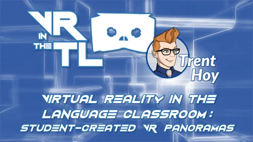

Emerging technology & faculty development
Virtual reality in the classroom
Practical experiments and guidance focused on the educational possibilities of immersive technology.

The approach
I explored VR as a communicative and experiential medium—not simply as a novelty or simulator—and translated that exploration into practical guidance for educators.
The thread
This work connects classroom experiments, professional presentations, Distant Faces, Shared Spaces, and later immersive course development at Nova Southeastern University.